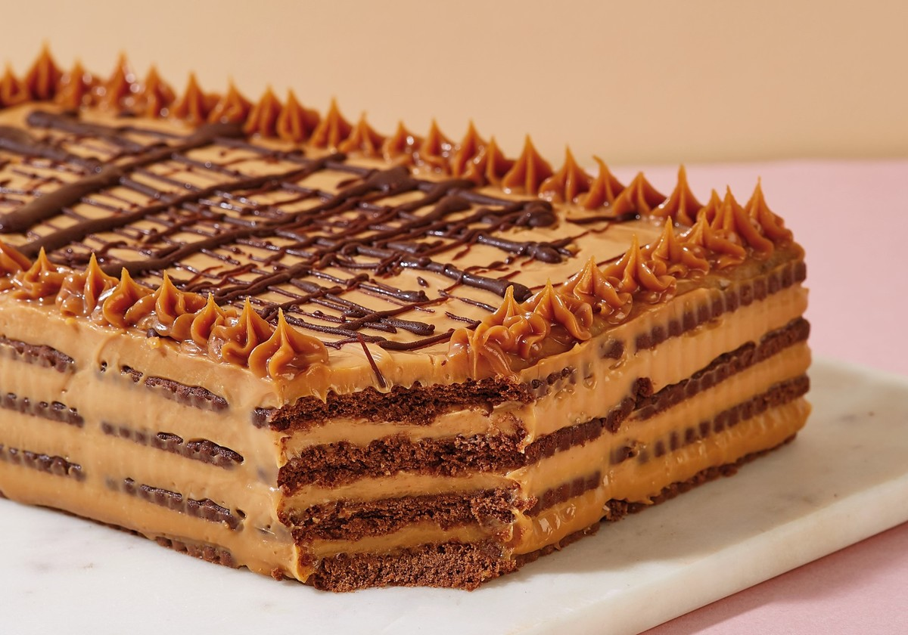

Chocotorta
La chocotorta es un postre argentino fácil y delicioso, hecho con capas de galletitas de chocolate mojadas en café y un relleno cremoso de queso crema mezclado con dulce de leche. Se refrigera para que quede suave y se sirve frío.
Ingredientes
- 2 paquetes de galletitas de chocolate (tipo Chocolinas)
- 500g de dulce de leche
- 500g de queso crema
- Café o leche para mojar las galletitas
Paso a Paso
- Mezclar el dulce de leche con el queso crema hasta lograr una crema homogénea.
- Mojar las galletitas en café o leche y hacer una capa en la fuente.
- Agregar una capa de la mezcla y repetir el proceso hasta terminar.
- Llevar a la heladera al menos 4 horas antes de servir.